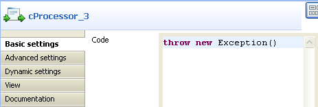
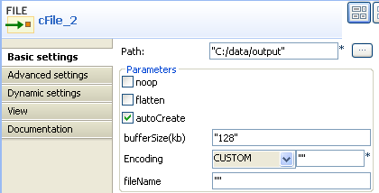

|
Component Family |
Exception | |
|
Function |
cTry offers Java's exception handling abilities, i.e. building try/catch/finally blocks. | |
|
Purpose |
cTry is designed to build Java try/catch/finally blocks to handle exceptions. | |
|
Basic settings |
Exceptions |
This field appears when you click on the Row > Catch link. You can type in the exception to be caught in this field. |
|
Usage |
cTry is designed to build Java try/catch/finally blocks to handle exceptions. | |
|
Limitation |
n/a | |
In this scenario, a cTry component is used to build try/catch/finally blocks to handle exceptions. Specifically, the route first tries to throw an exception, which is caught to trigger file transferring. Finally, the code block prints out the file transferring results.
To build the route, do the following:
Drag and drop the components from the Palette onto the workspace: cFile (X2), cTry and cProcessor (X3).
Link cFile_1 to cTry using a Row > Route connection.
Link cTry to cProcessor_3 using a Row > Try connection.
Link cTry to cProcessor_2 using a Row > Catch connection.
Link cProcessor_2 to cFile_2 using a Row > Route connection.
Link cTry to cProcessor_1 using a Row > Finally connection.

Double-click cFile_1 to open its Basic settings view in the Component tab.

In the Path field, enter the path of the source file, "C:/data/input/file" in this scenario. Select the noop check box, which means that the source file will not be moved from its original folder. Select the autoCreate check box to create the specified path automatically if it does not exist..
Double-click cProcessor_3 to open its Basic settings view in the Component tab.
In the Code box, enter
throw new Exception()to generate an exception.Double click the catch connection to open its Basic settings view in the Component tab.

In the Exceptions field, enter the exception to catch,
Exception.classin this scenario.Double click cProcessor_2 to open its Basic settings view in the Component tab.

In the Code box, enter
System.out.println("Upon exception, download: "+ exchange.getIn().getHeader("CamelFileName"));to give file download information upon an exception.Double click cFile_2 to open its Basic settings view in the Component tab.
In the Path field, enter the destination path of the downloads, "C:/data/output" in this scenario. Select the autoCreate check box to create the specified path automatically if it does not exist.
Double click cProcessor_1 to open its Basic settings view in the Component tab.

In the Code box, enter
System.out.println("Finally downloaded: "+ exchange.getIn().getHeader("CamelFileName"));to show the information on the final downloads.
Click the Code tab at the bottom of the design workspace to check the generated code.

As shown above, the route first runs a
.doTry ()after leaving the nodecFile_1, tothrow new Exception()bycProcessor_3. Then,.doCatch(Exception.class)occurs andcProcessor_2prints out the names of the files transferred tocFile_2. Finally,.doFinally()gets executed bycProcessor_1to print out the names of files transferred in the end.Press F6 to execute the Route.
The names of files transferred are displayed.